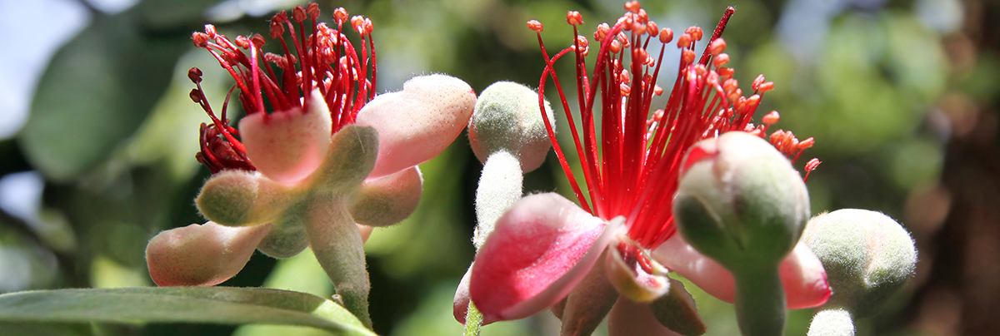
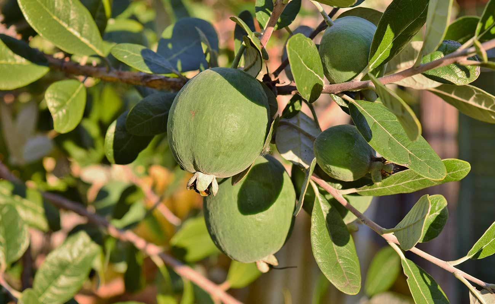

How to plant and care for feijoa trees
Feijoas will grow almost anywhere in New Zealand, are relatively pest and disease resistant and come loaded with Vitamin C and dietary fibre. They taste great raw or cooked and there are hundreds of sweet and savoury ways to use the fruit.
While it may be something of a Kiwi icon, the feijoa is actually a sun-tropical South American native, that arrived here in the early 1900s. Also called pineapple guava and guavasteen – both feijoas and guavas are part of the myrtaceae (myrtle) plant family – the feijoa hasn’t travelled widely, but a growing export market is rapidly introducing New Zealand varieties to the world.
Their bright red flowers made the first feijoas popular as ornamentals – the fruit was small and not terribly appealing – but the hardy nature of the species also made it ideal in coastal situations and as hedging. The arrival of new cultivars and a government breeding programme in the 1970s led to the introduction of varieties that extended the fruiting season and, importantly, offered frost tolerance, which has seen the feijoa heading into cooler southern gardens. Feijoa trees can handle temperatures as low as -8 degrees to -10 degrees.
Feijoas prefer a sunny situation and can handle most soil conditions, from heavy clays to light sandy soils, but will do best in a well-drained situation. They’ll also thrive in a container. Planting in autumn is recommended. Stake new plants, if they’re in an exposed situation, and feed with a general fertiliser in early spring – and again in summer. Watering may be needed only in particularly dry seasons. Suggested companion plants include marigolds, borage, comfrey and calendula.
Many gardeners are happy to let feijoas grow without pruning them back. But not everyone has the space today; if you want a bumper crop, pruning after fruiting is recommended. This will help produce more flowering wood and make pollination more successful. If space is at a premium, you can espalier feijoas.
While some of the newer cultivars, such as early season unique (which also bears from a young age), the dwarf bambina and the original sellowiana – are self-fertile – most varieties of feijoa require a pollinator. Even self-fertile varieties will benefit from pollination with another variety, producing larger, heavier crops. Planting two different varieties solves the problem.
There’s plenty of choice with early, mid and late season ripening varieties and fruit of various sizes and sweetness. Early varieties include anatoki, karaiki and pounamu; for mid-season fruit look to Apollo, kakapo or mammoth. To enjoy feijoas into winter, choose varieties such as triumph and wiki tu. By choosing cutting-grown feijoas you are sure of what you’re getting.
While feijoas are comparatively disease and pest free – birds aren’t attracted to the fruit – they can be attacked by leaf roller, scale and thrips. If this is a concern, check with your local garden centre for the most effective treatment.
Written by Patricia Moore for Zone Landscaping with images courtesy of Zone Landscaping, see the original article here.